1
アカウント作成 & プラン加入
Windows / Mac 共通の手順です
1-1アカウントを作りましょう
- ブラウザで claude.ai を開く
- 「Sign up（新規登録）」をクリック
- メールアドレスまたはGoogleアカウントで登録
- 届いたメールのリンクをクリックして認証完了
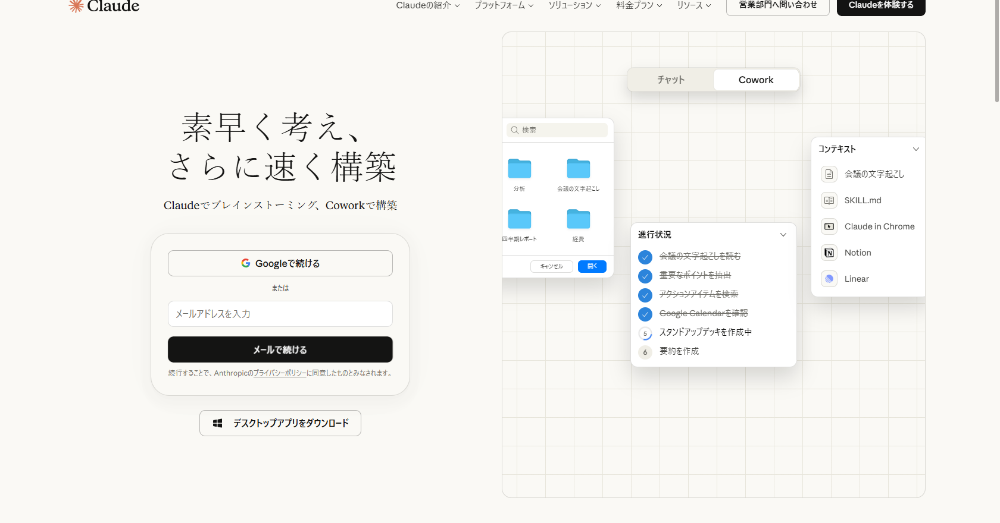
claude.ai を開くとこの画面が表示されます
1-2Claude Pro に加入しましょう
- claude.ai にログインした状態で、左下の「Upgrade」をクリック
- Claude Pro（$20/月）を選択
- クレジットカード情報を入力して契約完了
なぜ有料プランが必要？
無料プランではClaude Codeが使えません。Pro（$20/月）が最低ラインです。
2
環境を準備する
Antigravityをインストールして、ターミナルを開きます
⬆️
上の「Windows」または「Mac」を選んでください
選ぶとあなたのOS専用の手順が表示されます
2-1Gitをインストール（必須）
Gitが入っていないと、Claude Codeのインストールが失敗します。
必ず先にGitを入れてください。
Antigravityのターミナルで以下をコピペ → Enter：
winget install --id Git.Git -e --source winget
「すべてのソース契約条件に同意しますか？」と出たら Y を押してEnter。
💡 このコマンドは何をしている？
Windowsに標準搭載の winget（パッケージ管理ツール）を使い、Gitを公式ルートでインストールしています。GitはClaude Codeの動作に必要なコンポーネントを含んでいます。
2-2Node.jsをインストール
Claude Codeの動作に必要なエンジンです。インストールするだけで、直接触ることはありません。
- nodejs.org にアクセス
- 「Node.jsを入手」の大きなボタンをクリックしてダウンロード
- ダウンロードしたファイルをダブルクリック
- 設定はすべてそのまま「Next」でOK → 「Install」→「Finish」
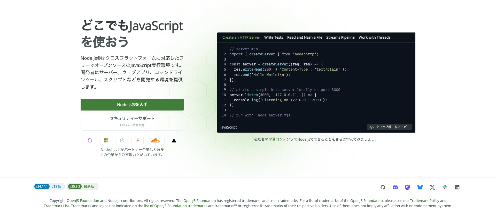
「Node.jsを入手」をクリック。LTS版（左下・緑色）が選ばれていればOK
2-3Antigravityをインストール
💡 Antigravityって何？
プログラマーが使うエディタの一種です。ターミナル（コマンドを打つ画面）が最初から内蔵されているので、別のアプリを用意する必要がありません。
- antigravity.dev にアクセス
- Windows版（.exe）をダウンロード
- ダウンロードした .exe をダブルクリック
- 「このアプリがデバイスに変更を加えることを許可しますか？」→「はい」
- インストール完了後、Antigravityを起動
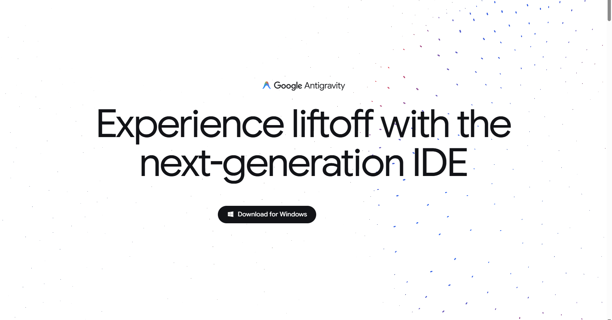
「Download for Windows」をクリック
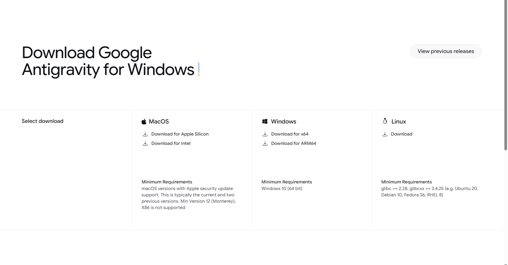
Windows欄の「Download for x64」をクリック
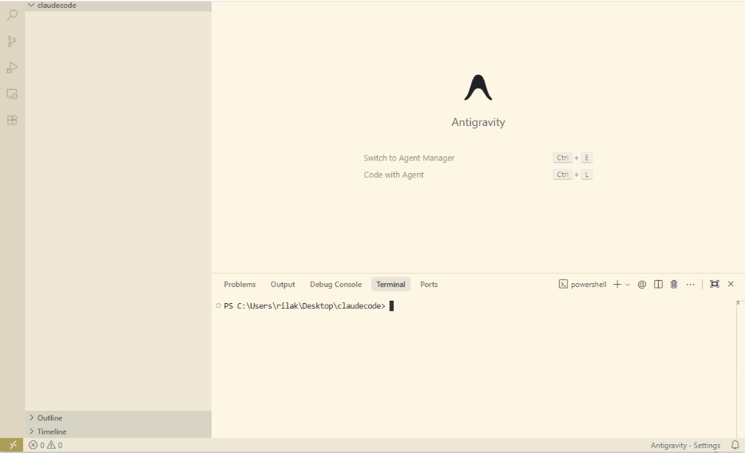
起動するとこの画面になります。下半分の「ターミナル」がコマンドを打つ場所です
😣 ターミナルが表示されない場合
メニューバーの「Terminal」→「New Terminal」をクリック、またはキーボードで Ctrl + `（Ctrlキー + バッククォート）を押してください。
MacはGit不要です。macOSにはGitが最初から入っています。
2-1Antigravityをインストール
💡 Antigravityって何？
プログラマーが使うエディタの一種です。ターミナルが内蔵されているので別アプリ不要です。
- antigravity.dev にアクセス
- Mac版（.dmg）をダウンロード
- .dmg ファイルをダブルクリック
- Antigravityアイコンを「Applications」フォルダにドラッグ＆ドロップ
- Launchpad から Antigravity を起動
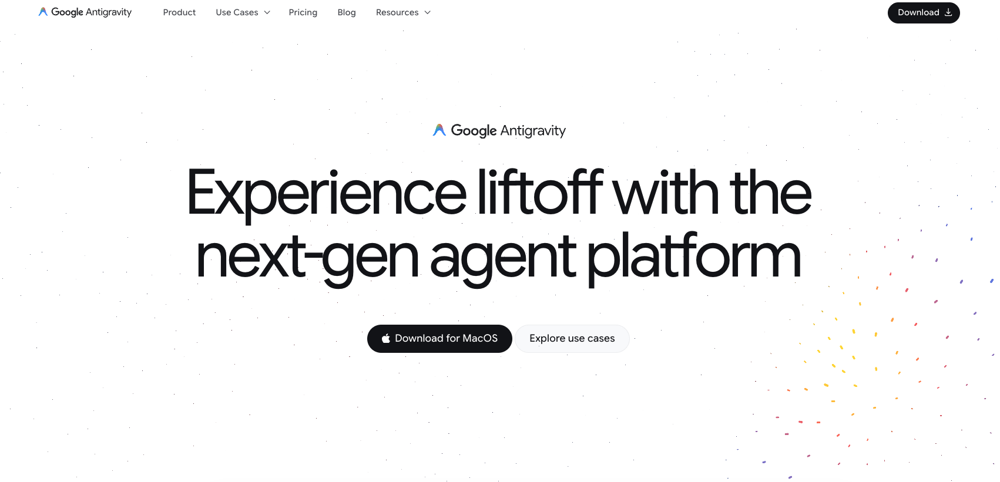
「Download for Mac」をクリック
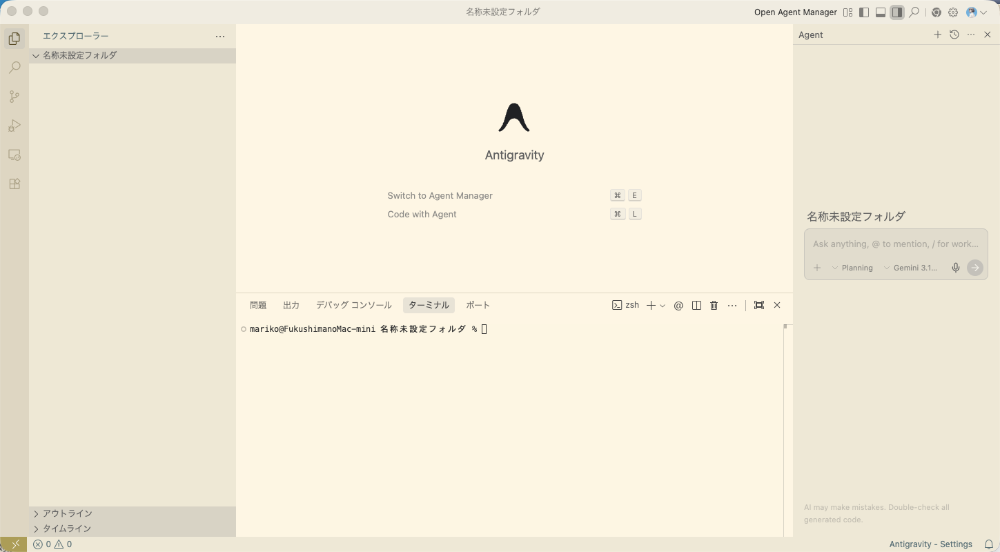
下半分の「ターミナル」がコマンドを打つ場所です
😣 「"Antigravity"は開発元が未確認」と出た場合
「システム設定」→「プライバシーとセキュリティ」→ 下にスクロール →「このまま開く」をクリックしてください。
3
Claude Code を起動する
コマンドをコピペするだけです
⬆️
上の「Windows」または「Mac」を選んでください
3-1Claude Codeをインストール
Antigravityのターミナル（画面下部）をクリックしてカーソルを置き、コピーボタンで貼り付けてEnterを押してください。
irm https://claude.ai/install.ps1 | iex
成功の目印: Claude Code has been installed! と表示されたらOK
😣 エラーが出た場合
ターミナルの種類が「PowerShell」になっているか確認してください。ターミナル右上のドロップダウンで「PowerShell」を選択できます。
3-1bコマンドの場所をWindowsに教える（必須）
インストールしただけでは claude コマンドが認識されません。以下をコピペ → Enter：
[Environment]::SetEnvironmentVariable("Path", [Environment]::GetEnvironmentVariable("Path", "User") + ";$env:USERPROFILE\.local\bin", "User")
この後、Antigravityを一度完全に閉じてください。
アプリごと「×」で閉じる → もう一度起動する。こうしないと設定が反映されません。
3-2インストールできたか確認
Antigravityを開き直してから、ターミナルに以下を入力：
claude --version
成功の目印: 1.0.25 のような数字が表示されたらOK
😣 「認識されません」と出た場合
- Antigravityをアプリごと閉じて再起動する
- それでもダメな場合、以下を実行：
$env:PATH = "$env:USERPROFILE\.local\bin;$env:PATH"
3-3ログイン
claude
- ブラウザが自動で開きます
- Step 1で作ったアカウントでログイン
- 「Allow（許可）」をクリック
- ブラウザは閉じてOK。Antigravityに戻ってください
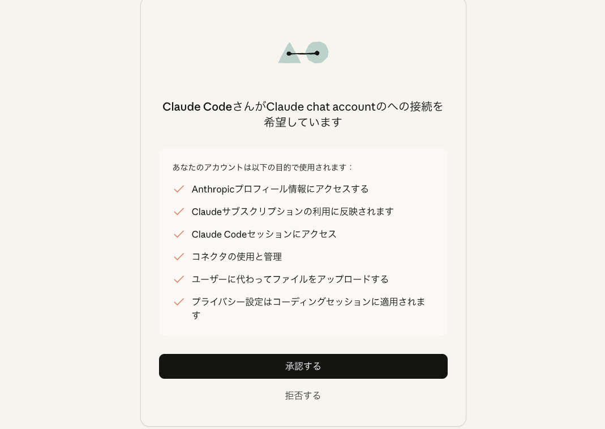
ログイン後、「Allow（許可）」をクリック
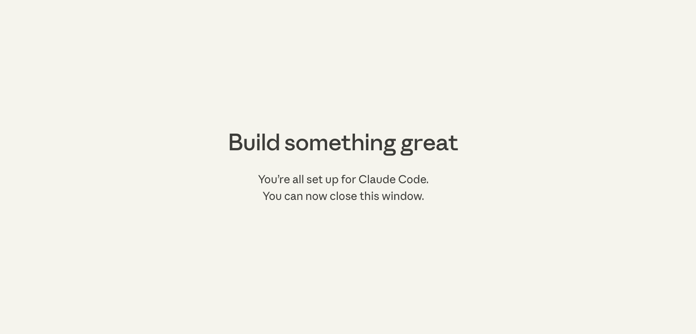
この画面が出たらブラウザは閉じてOK。Antigravityに戻りましょう
3-4最初の一言を打ちましょう
こんにちは、私の名前は〇〇です。よろしくお願いします！
日本語で返事が返ってきたらセットアップ完了です 🎉
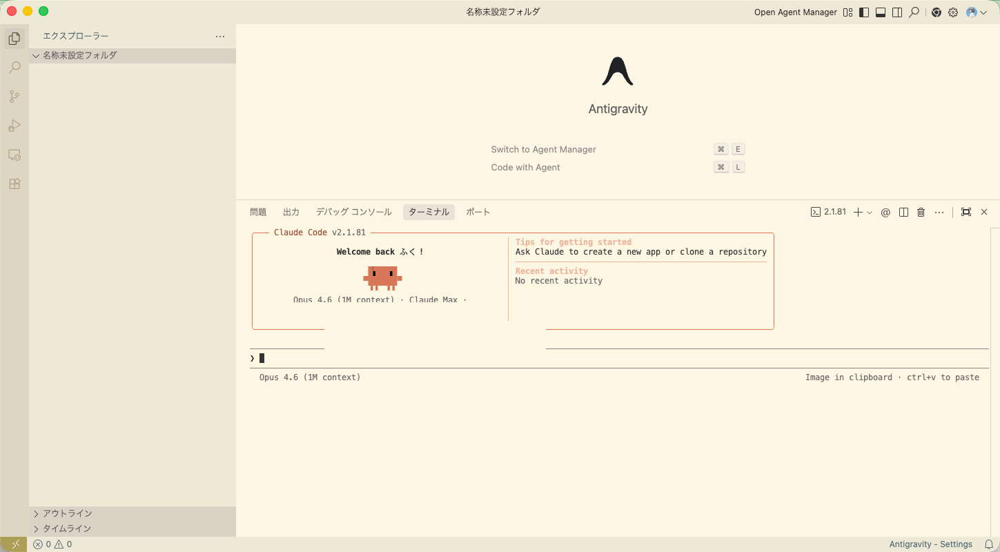
この画面が出たらセットアップ完了です！
😣 英語で返事が返ってくる場合
「日本語で答えてください」と入力してください。
3-1Claude Codeをインストール
curl -fsSL https://claude.ai/install.sh | bash
成功の目印: Claude Code has been installed! と表示されたらOK
3-2インストールできたか確認
ターミナルを一度閉じて開き直してから：
claude --version
成功の目印: 1.0.25 のような数字が表示されたらOK
😣 「command not found: claude」と出た場合
ターミナルを閉じて開き直す。それでもダメなら：
export PATH="$HOME/.local/bin:$PATH"3-3ログイン
claude
- ブラウザが自動で開きます
- Step 1で作ったアカウントでログイン
- 「Allow（許可）」をクリック
- Antigravityに戻ってください
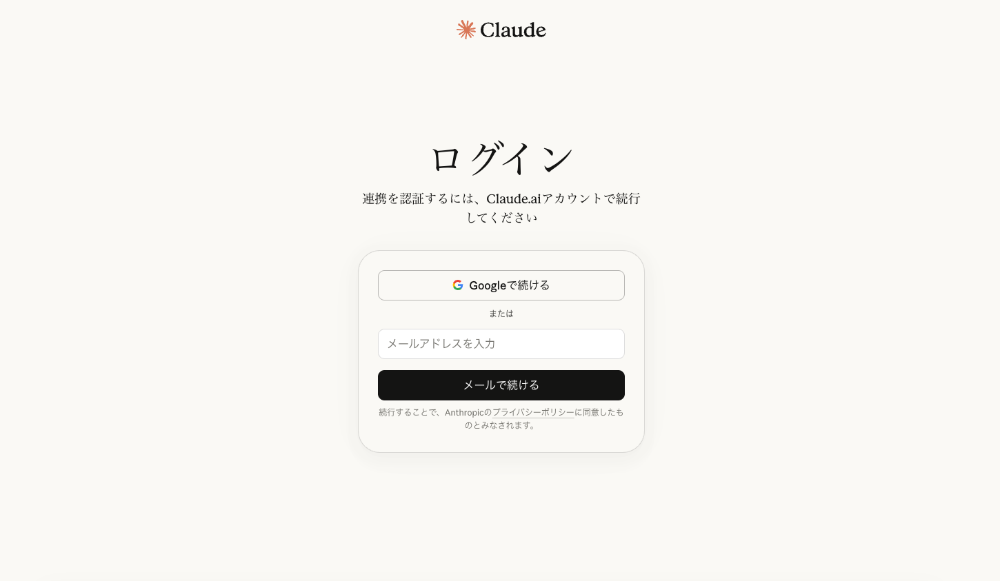
ブラウザが開いてこのログイン画面が出ます
「Allow（許可）」をクリック
この画面が出たらブラウザは閉じてOK
3-4最初の一言を打ちましょう
こんにちは、私の名前は〇〇です。よろしくお願いします！
日本語で返事が返ってきたらセットアップ完了です 🎉
この画面が出たらセットアップ完了です！
🎉 セットアップ完了！
まず簡単なお願いから試してみましょう。
自己紹介文をファイルに書いて保存して
今いるフォルダの中身を教えて
今週のTODOリストを5個考えてCSVで作って
終了するには /exit または Ctrl+C を2回